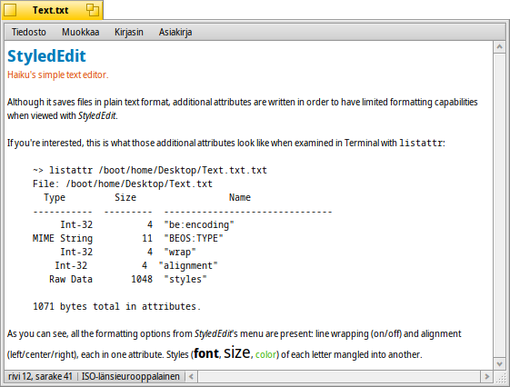

Suomi
Suomi Français
Français Deutsch
Deutsch Italiano
Italiano Русский
Русский Español
Español Svenska
Svenska 日本語
日本語 Українська
Українська 中文 ［中文］
中文 ［中文］ Português
Português Slovenčina
Slovenčina Magyar
Magyar Português (Brazil)
Português (Brazil) English
English Tyylitetty editori
Tyylitetty editori
| Työpöytäpalkki | ||
| Sijainti | /boot/system/apps/StyledEdit | |
| Asetukset | ei mitään |
Tyylitetty editori on Haikun yksinkertainen tekstieditori. Vaikka se tallentaa tiedostoja puhtaassa tekstimuodossa, tallentamisen yhteydessä kirjoitetaan lisäattribuutteja, jotka tarjoavat Tyylitetylle editorille rajoitetut muotoiluominaisuudet.
Jos sinua kiinnostaa, lisäattribuutit näyttävät seuraavan näköisiltä, kun niitä tutkitaan Pääteikkunan komennolla listattr:
~> listattr /boot/home/Desktop/test.txt
File: /boot/home/Desktop/test.txt
Type Size Name
----------- --------- -------------------------------
Int-32 4 "be:encoding"
MIME String 11 "BEOS:TYPE"
Int-32 4 "wrap"
Int-32 4 "alignment"
Raw Data 1048 "styles"
1071 bytes total in attributes.
Kuten voit nähdä, kaikki Tyylitetyn editorin valikon muotoiluvalitsimet ovat mukana: rivittäminen (päälle/pois päältä) ja tasaus (vasemmalle/keskelle/oikealle), jokainen yhdessä attribuutissa. Jokaisen kirjaimen tyylit (kirjasin, koko, väri) on runnottu yhteen attribuuttiin.
Joka tapauksessa on kiva idea, kun on mahdollista värittää tekstiä eri kirjasimilla ja kirjainkoola samalla kun ollaan normaalitekstissä. Esimerkiksi tiedosto ReadMe.txt on luettava komentotulkissa kaikilla alustalla ja siinä on silti hiukan tyyliä, kun sitä katsotaan Haikussa kaksoisnapsautuksella.
Tyylitetyn editorin käyttö on itse asiassa niin yksinkertaista, että ohitamme jokaisen tavallisen valikkorivin selittämisen. Kirjoita vain teksti, valitse sitten sanat, jotka haluat muotoilla ja käytä valikkoa . Rivittäminen ja tasaus valikosta toimii vain koko tiedostolle.